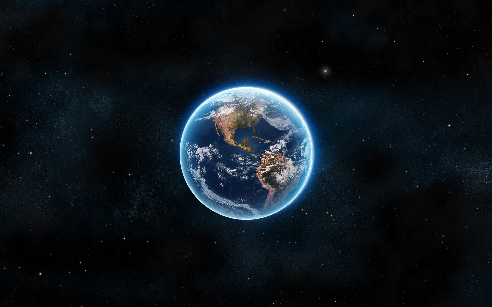

Radius: 6 371 km
Masse: 5,972E24 kg
Avstand fra Solen: 149 600 000 km
Område: 148 900 000 km²
Overflateareal: 510 100 000 km²
Folketall: 7,753 milliarder (2020
its a day in space
crazy feeling
Jorden, Terra, Gaia eller jorda
Er den planeten hvor mennesker oppstod og som vi bor på. Den er den tredje planeten i vårt solsystem regnet fra solen. Den er den femte største planeten i solsystemet og planeten med størst tetthet, hvilket innebærer at dens gravitasjon kun overgås av Jupiter, Saturn og Neptun.
Informasjon
Alder: 4,543E9 årRadius: 6 371 km
Masse: 5,972E24 kg
Avstand fra Solen: 149 600 000 km
Område: 148 900 000 km²
Overflateareal: 510 100 000 km²
Folketall: 7,753 milliarder (2020